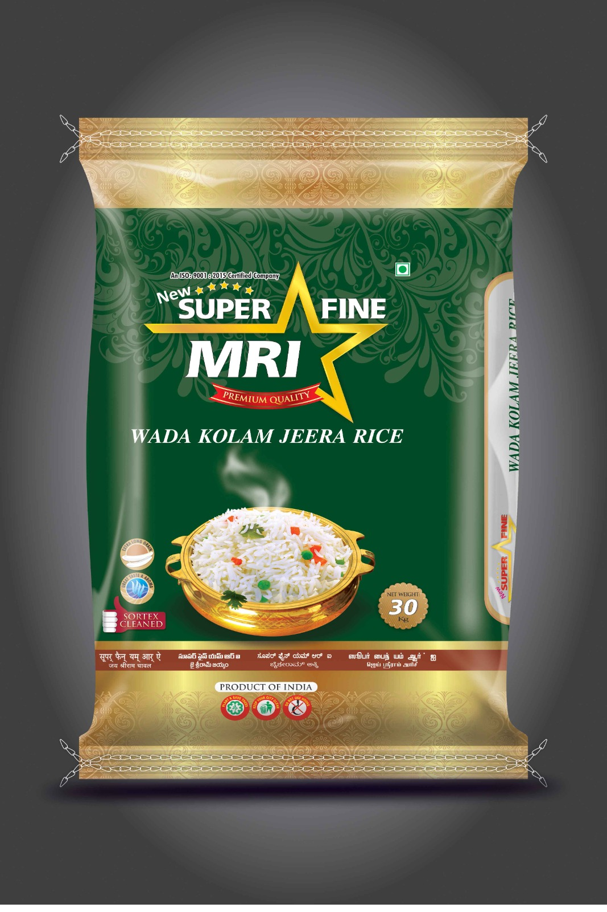

Super Fine Star
The Epitome of Purity, Aroma, and Taste.Super Fine Star is our premier export-quality range, meticulously crafted for those special occasions when only the best will do. This brand focuses on exquisite **non-boiled rice varieties**, renowned for their exceptional taste, delicate aroma, and perfect texture. Each grain of Super Fine Star promises an unparalleled culinary experience, reflecting the pinnacle of rice milling artistry.
Key Varieties under Super Fine Star:
- HMT Steam Rice
- Sona Masoori (Premium Raw)
- JSR Steam Rice